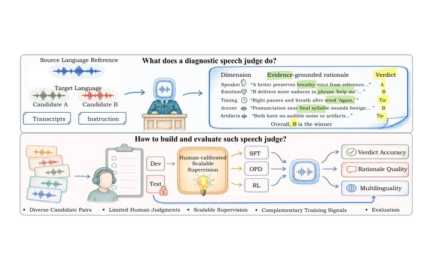
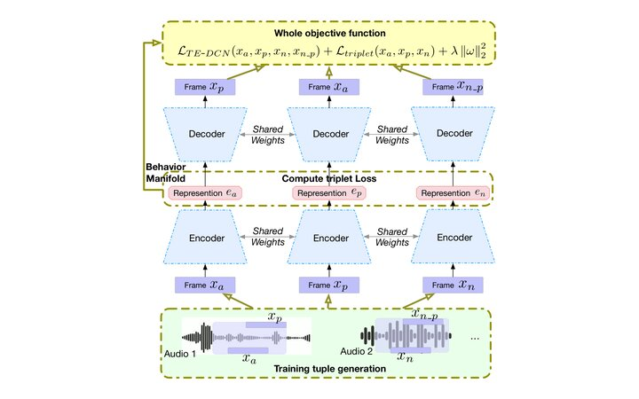
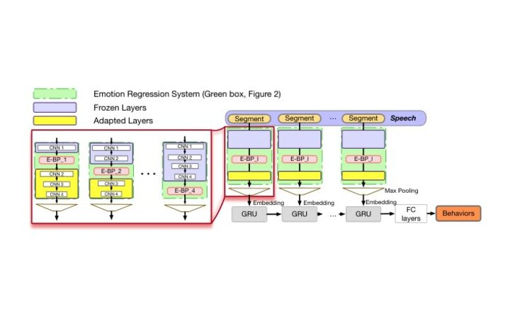
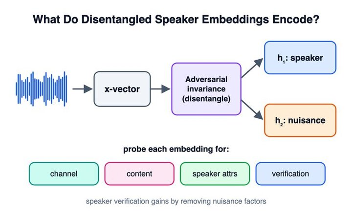
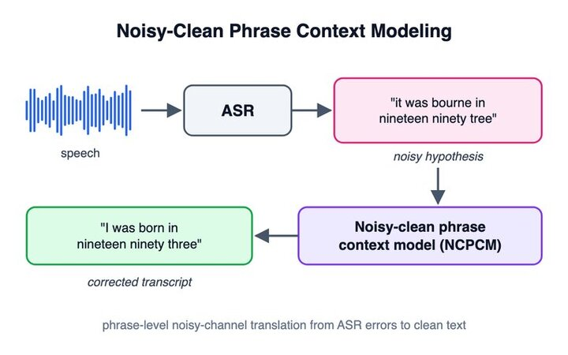
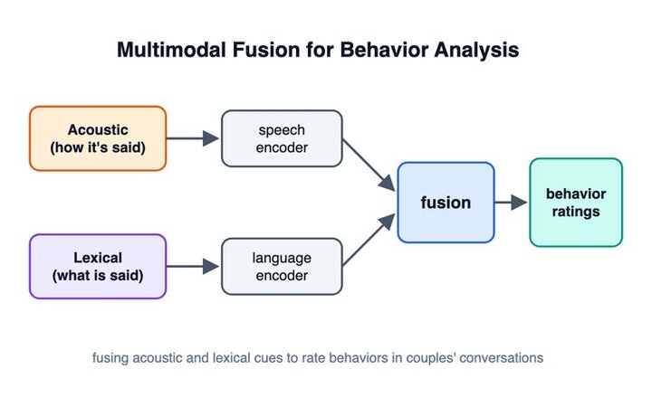

Haoqi Li
Senior Research Scientist · Netflix
I am a Senior Research Scientist at Netflix Research & Globalization DSE, working on multimodal and multilingual LLMs for speech understanding, reasoning, and generation, with the goal of removing language barriers from the Netflix experience.
Previously, I was a Senior Research Scientist at Hume AI, building the expressive speech generation engine behind its first empathic voice interface, and an Applied Scientist on the AWS AI Speech team. I received my Ph.D. in Electrical Engineering from the Signal Analysis and Interpretation Lab (SAIL) at USC, advised by Panayiotis Georgiou and Shrikanth Narayanan.
Research
My research and projects span speech and multimodal AI:
- Speech generation: post-training for expressive and controllable TTS and cross-lingual voice.
- Speech recognition and understanding: multilingual long-form ASR and LLM-based translation.
- Evaluation: diagnostic audio and multimodal LLM judges informed by human preferences.
- Speaker verification: speaker recognition and spoofing detection.
- Affective computing: emotion recognition from speech and multimodal signals.
News
- Oct 2026NEWPreprint: Region-Aware Masking for Accent-Robust Cross-Lingual TTS — cuts perceived accent leakage from 4.3 to 0.5 (0–5 scale).
- Sep 2026NEWThree preprints on speech & multimodal judges: SpeechCritic (diagnostic speech judge from limited human preferences), Louder, Longer, Livelier (understand acoustic bias in speech LLM judges), and Align Then Reason (multimodal lip-sync judge).
- Feb 2024Joined Netflix as a Senior Research Scientist in the Globalization team.
- Feb 2023Joined Hume AI as a Senior Research Scientist working on empathic voice interfaces.
- Jan 2021Joined AWS AI as an Applied Scientist (speaker verification, spoofing detection, ASR).
- Nov 2020Completed my Ph.D. at USC SAIL.
Publications
Selected papers are representative. * denotes equal contribution. Full list on Google Scholar.



arXiv 2026



CSL 2021


PeerJ 2020

Odyssey 2020

APSIPA 2019


ICMI 2018


Experience
-
Senior Research Scientist — NetflixFeb 2024 – present · Los Gatos, CA · Globalization, Research & DSE
As tech lead, I explore AR, non-AR, and hybrid controllable speech generation. I also work on LLM-based speech recognition and generation, speech-quality evaluation with LLM judges, and LLM-based subtitle translation and evaluation. I mentor researchers and interns.
-
Senior Research Scientist — Hume AIFeb 2023 – Feb 2024 · Sunnyvale, CA
Tech lead for controllable speech generation and conversational systems for empathic voice interfaces; speech emotion recognition.
-
Applied Scientist — Amazon AWS AIJan 2021 – Feb 2023 · Sunnyvale, CA
Speaker verification and spoofing detection (Amazon Connect Voice ID); accented-speech ASR fairness.
-
Research Assistant — USC SAILAug 2014 – Nov 2020 · Los Angeles, CA
Deep learning for human behavior and emotion from speech and language under low-resource conditions: sparse networks, transfer learning, unsupervised representation learning.
-
Research Internships2017 – 2020
Amazon Lab126 (2020) — audio-visual emotion recognition with domain adaptation · JD AI Research (2018) — voice conversion, end-to-end TTS, speaker-invariant emotion · Sony PlayStation (2017) — reinforcement learning for funny-scene detection in movies.
Service
Conference reviewer: ICASSP, Interspeech, ASRU, SLT, ACL, EMNLP, ACII, ICMI, IWSDS.
Journal reviewer: IEEE/ACM TASLP, IEEE TAFFC, IEEE TMM, IEEE SPL, IEEE Access, Computer Speech & Language, ACM TOMM, APSIPA TSIP, EURASIP JASM.